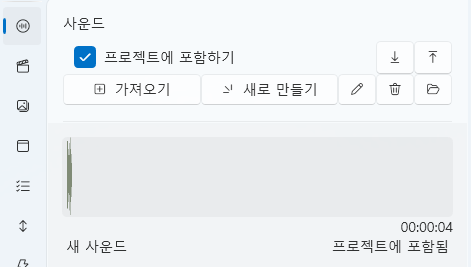

사운드 탭¶
VoiceScriptPlayer의 사운드 탭은 프로젝트의 핵심이 되는 오디오를 관리하고,
자막(STT), 번역, 음성 합성(TTS) 기능을 수행하는 편집 탭입니다.
모든 트랙과 이벤트는 사운드를 기준으로 동기화됩니다.
1. 기본 인터페이스¶

사운드 탭은 프로젝트에서 사용하는 모든 오디오 파일을 관리하는 곳입니다.
TTS 생성, 자막 설정, 파일 가져오기 등 대부분의 음성 관련 기능이 이곳에서 수행됩니다.
| 구성 요소 | 설명 |
|---|---|
| ① 프로젝트에 포함하기 | 체크하면 불러온 사운드가 프로젝트 내부 폴더에 복사됩니다. 체크 해제 시, 외부 파일을 참조만 하며 실제 파일은 복사되지 않습니다. |
| ② 가져오기 | 로컬 디스크에서 .wav, .mp3 파일을 불러옵니다.“프로젝트에 포함하기” 상태에 따라 복사 또는 참조로 동작합니다. |
| ③ 새로 만들기 | TTS 음성을 새로 생성합니다. 클릭 시 TTS 생성 창이 열리며, 입력한 대사를 지정한 음성 엔진(COEIROINK 등)으로 합성합니다. |
| ④ 편집 ✏️ | 선택한 사운드의 상세 편집 창을 엽니다. 불러온 음성은 자막 설정 창, 생성한 TTS 음성은 TTS 편집 창이 표시됩니다. |
| ⑤ 삭제 🗑️ | 선택한 사운드를 목록에서 제거합니다. |
| ⑥ 내보내기 ↗ / 다시 가져오기 ↙ | 이미 프로젝트에 포함된 사운드를 외부 폴더로 내보내거나, 다시 프로젝트에 포함시킵니다. |
| ⑦ 사운드 폴더 열기 📂 | 현재 프로젝트의 사운드 파일이 저장된 폴더를 바로 엽니다. |
| ⑧ 파형 미리보기 영역 | 선택한 사운드의 파형과 길이를 표시합니다. 하단에는 파일 이름, 재생 길이, 포함 여부가 표시됩니다. |
⚙️ 동작 요약¶
| 상황 | 결과 |
|---|---|
프로젝트에 포함 체크 후 가져오기 |
파일이 프로젝트 폴더(Asset/Sound/)로 복사됩니다. |
| 체크 해제 후 가져오기 | 파일은 외부 참조로만 등록되며, 실제 파일은 이동하지 않습니다. |
| “외부로 내보내기” 버튼 사용 | 선택된 사운드를 지정 폴더에 복사합니다. |
| “다시 프로젝트로 가져오기” 버튼 사용 | 외부에 있던 사운드를 다시 프로젝트 내로 복원합니다. |
💡 팁:
“프로젝트에 포함하기” 체크를 해제하면 다음과 같은 장점이 있습니다:
- ✅ 프로젝트 용량 절감: 큰 음성 파일이 복사되지 않아 저장 공간을 절약할 수 있습니다.
- ⚡ 빠른 로딩: 복사 과정이 생략되어 가져오기 속도가 빨라집니다.
- 🛠️ 외부 수정 용이: 외부에서 직접 편집(예: 오디오 교체, 노이즈 제거 등)한 파일이 즉시 반영됩니다.
- 🧾 저작권 보호: 유료 음원이나 상업용 음성을 프로젝트 내부에 포함하지 않아도 됩니다.
단, 이렇게 참조한 음원은 내보내기(게시) 시 자동 제외되어,
다른 사용자에게 배포해도 음원 파일은 포함되지 않습니다.
2. 자막 설정 (Medio Editor)¶

사운드 파일을 선택하고 ✏️ 편집 버튼을 누르면
Medio Editor 창이 열리며, 자막 생성(STT), 번역, 위치 조정 등을 한 번에 수행할 수 있습니다.
🎛️ 기본 구성¶
| 항목 | 설명 |
|---|---|
| 이름 | 현재 편집 중인 음성 파일의 이름입니다. |
| 길이 | 사운드의 재생 구간과 전체 길이를 표시합니다. |
| AI 설정 | Whisper, DeepL 등 AI 엔진의 옵션을 바로 열어 설정할 수 있습니다. 설정 변경을 위해 창을 닫을 필요가 없습니다. |
| 음성 언어 | STT에서 사용할 음성의 언어를 선택합니다. (예: 일본어, 한국어, 영어 등) |
| 번역 언어 | 번역 시 사용할 목표 언어를 지정합니다. |
| 미리보기 영상 창 | 자막이 미리 표시됩니다. |
| 자막 목록 (오른쪽) | 변환된 자막의 시간 구간, 위치 등을 개별 수정할 수 있습니다. |
🗣️ 음성을 자막으로 변환 (STT)¶
- 음성 언어를 설정합니다.
- [음성을 자막으로 변환] 버튼을 클릭합니다.
- 등록된 STT 엔진(예: Whisper 등)을 사용해 음성을 텍스트로 변환합니다.
- 결과는 자동으로 시간 단위별 자막 목록으로 표시됩니다.
| 항목 | 설명 |
|---|---|
| StartTime / EndTime | 자막의 시작·끝 시간을 조정합니다. |
| 자막 내용 | 변환된 텍스트가 표시되며, 직접 수정할 수 있습니다. |
| X / Y | 화면에서 자막의 표시 위치를 지정합니다. |
| FontSize / OutlineSize | 자막의 글자 크기와 외곽선 두께를 조절합니다. |
| Dock | 자막의 기준 위치(상단, 중앙, 하단 등)를 선택합니다. |
| Fill / Outline | 자막의 색상 및 외곽선 색상을 설정합니다. |
💡 참고:
변환된 자막은 프로젝트의Asset/Sound/폴더에 자동 저장되며,
필요 시 다른 음성이나 비디오에 재활용할 수 있습니다.
🌐 자막 번역¶
- 음성을 자막으로 변환한 후 [자막 번역] 버튼을 클릭합니다.
- 선택된 번역 엔진(DeepL, LibreTranslate 등)을 사용하여
음성 언어 → 번역 언어로 자동 번역이 수행됩니다. - 번역된 자막은 원본과 나란히 표시되며, 필요 시 개별 수정이 가능합니다.
| 옵션 | 설명 |
|---|---|
| 자동 번역 엔진 | 설정에서 지정된 번역 API를 사용합니다. |
| 결과 미리보기 | 자막 미리보기 창에서 번역 결과를 즉시 확인할 수 있습니다. |
| 편집 반영 | 번역된 자막을 선택 후 오른쪽 패널에서 직접 수정할 수 있습니다. |
💡 팁:
- 일본어 음성을 한국어로 번역하려면 음성 언어=일본어, 번역 언어=한국어로 설정합니다.
- 번역된 자막은 원본 자막과 함께 저장되어, 해당 사운드가 재생 될 때 자동으로 표시됩니다.
▶️ 미리보기 및 확인¶
- 하단의 재생 버튼 ▶ 을 눌러 자막 싱크를 확인할 수 있습니다.
- 구간 슬라이더로 특정 시간대의 자막만 검토할 수 있습니다.
⚙️ STT 및 번역 엔진 설정:
- AI → Whisper
- AI → DeepL
- AI → LibreTranslate
📦 출력 위치¶
| 종류 | 경로 |
|---|---|
| STT 자막 파일 | Asset/Sound/원본_파일명.srt |
3. 음성 합성 (TTS)¶

사운드 탭에서 [새로 만들기] 버튼을 클릭하면
Audio Editor 창이 열리며, 여러 문장을 입력하고 각 문장마다 음성 엔진별로 합성 설정을 적용할 수 있습니다.
COEIROINK, Hailuo 등의 음성 엔진을 선택해 자연스러운 대사 단위 합성을 구성할 수 있습니다.
🧩 주요 변화 요약¶
| 항목 | 설명 |
|---|---|
| 여러 문장 입력 지원 | 한 번의 편집 세션에서 여러 문장을 등록하고, 각각 개별적으로 음성 합성을 적용할 수 있습니다. |
| 문장 단위 TTS 설정 | 각 문장마다 음성 캐릭터, 피치, 속도, 볼륨 등 독립된 설정 가능 |
| 타임라인 추가 | TTS 전용 타임라인이 추가되어, 구간 조정 방식이 다른 트랙(비디오/이벤트 등)과 동일하게 작동 |
| 미리보기 개선 | 문장 단위로 재생하거나 전체를 연속 재생 가능 |
🎛️ 기본 구성¶
| 항목 | 설명 |
|---|---|
| 이름 | 생성할 음성 파일의 이름입니다. |
| 길이 | 현재 문장들의 전체 재생 길이를 표시합니다. |
| AI 설정 | 선택한 TTS 엔진의 설정 창을 바로 열 수 있습니다. |
| TextToSpeech 엔진 | 사용할 엔진을 선택합니다. (COEIROINK, Hailuo 등) |
| 타임라인 | 각 문장이 시간축에 배치되어 있으며, 구간 길이·위치를 조정할 수 있습니다. 타임라인의 작동 방식은 비디오, 이벤트 등과 동일합니다. |
🗣️ 문장 단위 편집¶
각 문장은 독립된 블록으로 관리됩니다.
문장별로 텍스트, 음성 설정, 자막 스타일을 모두 개별 조정할 수 있습니다.
| 항목 | 설명 |
|---|---|
| 문장 입력란 | 변환할 텍스트를 입력합니다. 여러 줄로 입력 시 각 줄이 개별 문장으로 처리됩니다. |
| 캐릭터 선택 | 사용할 음성 캐릭터(예: 리린짱, 노엘 등)를 지정합니다. |
| 배속 / 피치 / 억양 / 볼륨 | 각 문장마다 독립적으로 조정 가능합니다. |
| 자막 미리보기 | 하단에 자막이 즉시 표시되어 싱크를 확인할 수 있습니다. |
| 자막 설정 | X/Y 위치, 글자 크기, 색상, 외곽선 등 시각적 속성을 개별 설정합니다. |
📜 타임라인 제어¶
새롭게 추가된 TTS 타임라인은 기존 타임라인(비디오, 스크립트 등)과 동일한 방식으로 작동합니다.
| 항목 | 설명 |
|---|---|
| 문장 노드 | 각 문장은 개별 노드로 표시되며, 드래그로 위치를 조정할 수 있습니다. |
| 구간 길이 조절 | 노드의 양쪽 핸들을 드래그하여 길이를 조정할 수 있습니다. |
| 순서 변경 | 문장 순서를 변경하면 타임라인 순서도 자동 갱신됩니다. |
| 재생 컨트롤 | 구간 재생 / 전체 재생 / 일시정지 등 공통 컨트롤을 제공합니다. |
💡 팁:
타임라인을 통해 음성과 자막, 이벤트를 완벽하게 싱크시킬 수 있습니다.
기존 트랙 편집과 동일한 단축키 및 조작 방식이 적용됩니다.
🎧 엔진별 특징¶
🪶 COEIROINK¶
- 일본산 오픈소스 음성 합성 엔진
- 감정 표현과 억양 제어에 강점
- 로컬 합성 및 빠른 미리보기 가능
- 지원 형식: WAV
- 주요 설정:
Speed,Pitch,Volume
🌊 Hailuo¶
- 클라우드 기반 AI 음성 엔진
- 자연스러운 발음과 부드러운 연결 처리에 강점
- 다국어(한국어, 일본어, 영어 등) 지원
- 클라우드 API를 통한 고음질 합성
- 주요 설정:
Pitch,Intensity,Timbre,Emotion
🎧 웹에서 직접 체험하기
Hailuo 공식 데모 페이지에서는
다양한 보이스 프로필을 미리 들어보고, 음성을 생성해볼 수 있습니다.
원하는 스타일(예: 여성, 남성, 감정형 등)을 선택하여
톤·속도·감정 표현을 미리 확인한 후, VoiceScriptPlayer에서 동일하게 사용할 수 있습니다.

▶️ 미리보기 및 합성¶
- ▶ 버튼을 클릭하면 현재 선택된 문장을 즉시 재생합니다.
- 전체 문장 재생도 가능하며, 타임라인 상에서 구간별 확인도 지원합니다.
- 문장을 수정하면 즉시 반영되어 재합성됩니다.
📦 출력 위치¶
| 항목 | 경로 |
|---|---|
| 생성된 음성 파일 | Asset/Sound/ 폴더에 자동 저장 |
| 자막 데이터 | 동일 경로 내 .srt 또는 프로젝트 메타 데이터로 저장 |
💡 팁¶
- 문장 단위로 감정 변화나 캐릭터 전환이 필요한 경우,
문장을 분리하여 각각 다른 캐릭터와 설정을 적용하면 자연스러운 대화 연출이 가능합니다. - COEIROINK와 Hailuo를 섞어 사용할 수도 있습니다.
(예: 일본어 파트는 COEIROINK, 한국어 내레이션은 Hailuo)
4. 트랙에 추가하기¶
생성되거나 불러온 음성은 드래그하여 타임라인에 바로 추가할 수 있습니다.
- 왼쪽 목록에서 사운드를 마우스로 끌어다 트랙 위에 놓으면,
자동으로 노드가 생성되어 트랙에 추가됩니다. - 트랙에서 길이를 조정하거나 위치를 변경하면 즉시 반영됩니다.
- 여러 사운드를 병렬로 배치해 복합 오디오 연출도 가능합니다.
💡 팁:
사운드 노드는 타임라인의 다른 리소스(Live2D, UI, 이벤트)와 함께
시간축 기준으로 정밀하게 싱크를 맞출 수 있습니다.
🎚️ 사운드 노드 설정¶
타임라인에 추가된 음원들은 소리 설정 창을 통해 세부 조정이 가능합니다.
사운드 노드를 우클릭 후 “편집”을 선택하거나,
더블클릭하여 다음과 같은 설정 창을 열 수 있습니다.

| 항목 | 설명 |
|---|---|
| 시작 시간 / 끝 시간 | 재생 구간의 시작과 종료 시점을 설정합니다. |
| 반복 | 체크 시, 지정된 구간이 반복 재생됩니다. |
| 왼쪽 / 오른쪽 음량 | 스테레오 밸런스를 개별 조정할 수 있습니다. |
이 기능을 활용하면, 특정 구간만 반복하거나
좌우 음량을 분리하여 공간감 있는 오디오 연출이 가능합니다.